JVM基础（11）——G1垃圾回收器
一、简介
经过前面章节的讲解，大家应该对ParNew+CMS这个GC组合的执行原理非常清楚了。但是，“Stop the World”这个最根本的问题并没有解决。无论是新生代的回收，还是老年代的回收，都会或多或少发生“Stop the World”现象，对系统的运行产生影响。
所以，后续各种垃圾回收器的优化，都是奔着减少“Stop the World”这个目标去的。在此基础上，G1垃圾回收器就诞生了，它可以提供比“ParNew+CMS”组合更好的垃圾回收性能。
1.1 什么是G1
G1垃圾回收器是Jdk1.7的新特性之一，在Jdk1.7+版本都可以自主配置G1作为JVM GC选项。G1垃圾回收器可以同时回收新生代和老年代的对象，它一个人就可以搞定所有的垃圾回收。
G1将整个Java堆划分为多个大小相等的独立区域（Region）：
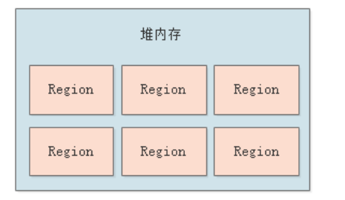
并且，虽然G1还保留着新生代和老年代的概念，但它们只是逻辑上的，新生代和老年代不再是物理上隔阂的，而只是一部分Region的集合，每一个Region既可能属于新生代，也可能属于老年代：
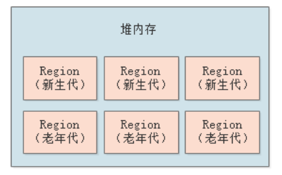
刚开始时Region谁都不属于，然后会先分配给新生代，当对象越来越多后，可能触发G1对这个Region进行垃圾回收：
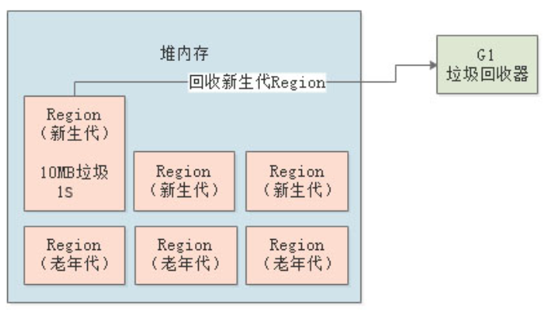
然后下一次，这个Region可能又被分配给了老年代，用来存放长期存活对象：

1.2 预期停顿时间
G1最大的特点就是，可以让我们设置一个垃圾回收的预期停顿时间。比如我们可以指定：G1进行垃圾回收时，保证“Stop the World”的时间不超过1分钟。
之前，我们采用ParNew+CMS时，为了尽量减少GC次数，需要对JVM内存空间合理划分，还要配置各种JVM参数。但是现在，我们可以直接给G1指定一个预期停顿时间，告诉它一段时间内因垃圾回收导致的系统停顿时间不能超过多久，剩下的全部交给G1全权负责，这样就相当于我们可以直接控制GC对系统性能的影响。
通过
-XX:MaxGCPauseMills参数可以设定预期停顿时间，表示G1执行GC时最多让系统停顿多长时间，默认200ms。
1.3 回收价值
G1之所以能够做到控制停顿时间，是因为它会追踪每个Region里的回收价值。所谓回收价值，是指每个Region里有多少垃圾对象，如果进行回收，耗时多长，能够回收掉多少。
大家看下下图，G1通过追踪发现，1个Region中的垃圾有10MB，回收需要1s，另一个Region中的垃圾有20MB，回收需要200ms：
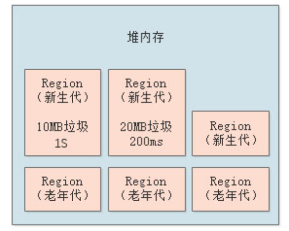
然后在垃圾回收的时候，G1就会判断哪个Region更有回收价值，显然20MB/200ms那个更有回收价值，因为所需的时间更短，能回收的垃圾也更多。
根据回收价值进行GC，这个就是G1的核心设计思路。
二、Region
2.1 Region大小设置
首先，G1的堆内存中，各个Region的大小是相同的，那么要分配多少个Region呢？每个Region的大小为多少？
其实是自动设置的，我们通过-Xms和-Xmx来设置堆内存的大小，然后JVM启动时发现如果采用了G1作为垃圾回收器（通过参数-XX:UseG1GC指定），会用堆内存大小除以2048，得到每个Region的大小。比如堆大小为4096MB，默认2048个Region，那每个Region就是2MB：
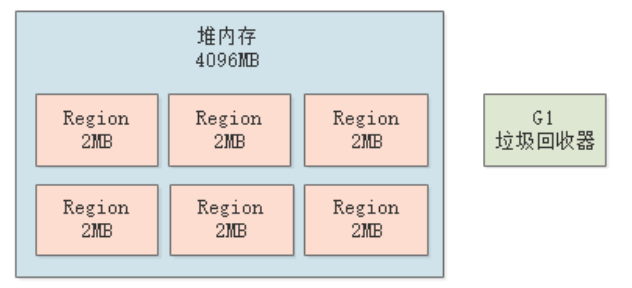
Region的大小必须为2的整数倍，如2MB、4MB、6MB等，可以通过
-XX:G1HeapRegionSize参数手动指定。
2.2 动态Region
初始情况下，堆内存的5%空间为新生代的大小，以4G堆内存来算，就是200MB的新生代，约100个Region。但是在系统运行期间，Region的数量是动态变化的，不过新生代最多占比也不会超过60%。
另外，一旦Region进行了垃圾回收，此时新生代的Region数量还会减少，这些其实都是动态的。
可以通过参数
-XX:G1NewSizePercent来设置新生代的初始占比，默认5%；通过参数-XX:G1MaxNewSizePercent来设置新生代的最大占比，默认60%。
2.3 Eden和Survivor
G1垃圾回收器的新生代也有Eden和Survivor的划分，同样通过-XX:SurvivorRatio=8设置比例。比如说，新生代最初有100个Region，那Eden就占80个，两个Survivor各占10个。
随着对象不停的在新生代分配，属于新生代的Region会不断增加，Eden和Survivor对应的Region也会不断增加。
三、垃圾回收原理
接着，我们来看下G1进行垃圾回收的整个流程。
3.1 新生代回收
G1对新生代的垃圾回收思路和ParNew其实是类似的，随着不停的在新生代的Eden区中分配对象，JVM会不停的给新生代增加更多的Region，直到新生代的占比达到堆内存的60%。
假设此时新生代的Region数目为1200个，其中Eden占了1000个Region（两个Survivor各100个），并且已经分配满了对象：
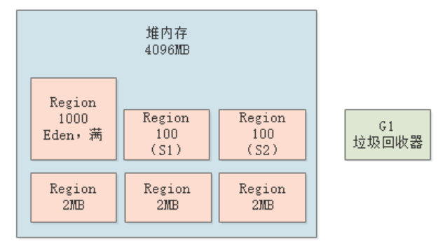
这个时候，就会触发新生代的GC，进入“Stop the World”状态，G1垃圾回收器会使用复制算法，将存活的对象放入其中一块空的Survivor区中（上图中的S1），然后回收掉Eden中的垃圾对象：
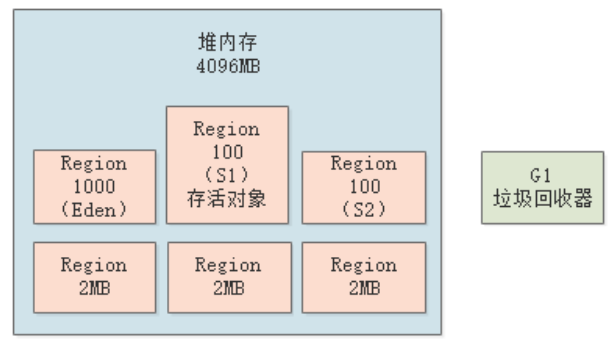
这个过程和ParNew还是有区别的，因为G1可以设置预期停顿时间（
-XX:MaxGCPauseMills参数，默认200ms），它会对每个Region进行追踪，估算回收该Region的价值，然后选择一部分Region，保证系统停顿时间在指定的控制范围内。
3.2 晋升到老年代
默认新生代最多只能占用60%Region，老年代最多可以占用40%Region，以4G堆内存算就是800个Region。那么新生代中的对象何时会晋升到老年代呢？这个机制和之前章节讲解的ParNew+CMS几乎一样：
- 对象躲过了多次GC，达到一定的年龄（
-XX:MaxTenuringThrehold参数设置）； - 符合动态年龄判断规则，即某次新生代GC后，各年龄存活对象的累加大小超过了Survivor的50%；
除了上述两种情况外，还有一种大对象直接晋升的规则，不过和之前有所区别：
G1提供了专门的Region存放大对象，而不是让大对象进入老年代的Region。在G1中，大对象的判断规则就是超过了一个Region的50%，而且如果对象太大，会跨多个Region存储。
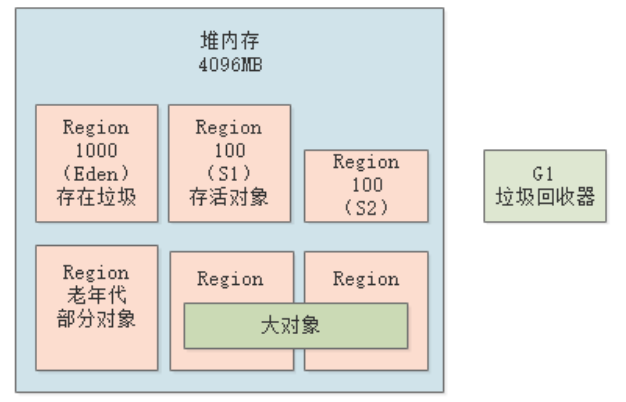
新生代和老年代在进行垃圾回收的时候，会顺带将大对象Region一起回收。
3.3 混合回收
随着系统的运行，会有越来越多的存活对象进入老年代，因次会动态给老年代分配更多的Region。当老年代的Region数量达到堆内存的45%时（通过参数-XX:InitiatingHeapOccupancyPercent可以配置），会触发一次混合回收（Mixed GC），即对新生代和老年代一起回收。
比如，假设堆内存总共2048个Region，如果老年代占到45%，即约1000个Region时，就会触发混合回收，如下图：
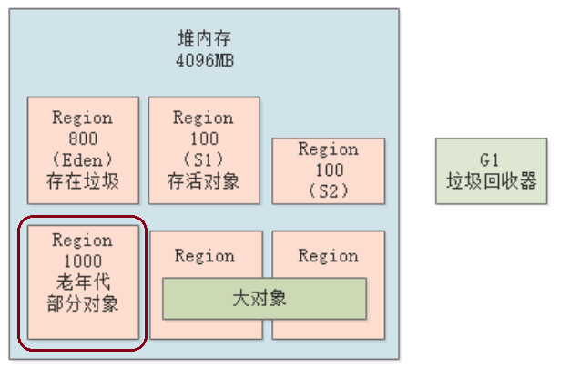
初始标记
混合回收的第一步，就是进行初始标记。初始标记需要“Stop the World”，然后标记GC Roots能够直接引用到的对象，这个过程是非常快的。
如下图，初始标记时先挂起工作线程，然后对各个线程内的局部变量代表的GC Roots，以及方法区中的类静态变量代表的GC Roots进行扫描，标记出来它们直接引用的那些对象：
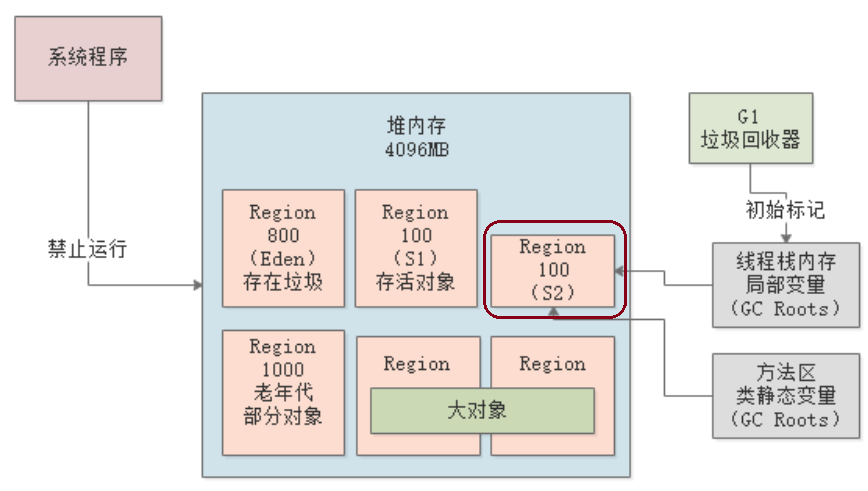
初始标记阶段，需要“Stop the World”，但是并不耗时。
并发标记
接着，进入并发标记阶段。该阶段工作线程和GC线程并行运行，GC线程会从GC Roots开始追踪所有存活的对象。这里举个例子来更好的理解下GC Roots追踪。
先来看下示例代码：
public class Kafka{
public static ReplicaManager replicaManager = new ReplicaManager();
}
public class ReplicaManager{
public static ReplicaFetcher replicaFetcher = new ReplicaFetcher();
}
上述代码中，类静态变量replicaManager是一个GC Root。初始标记阶段，仅仅标记它指向的ReplicaManager对象。在并发标记阶段，进行GC Roots追踪时，会从GC Root的直接关联对象（ReplicaManager）开始往下追踪，然后追踪到replicaFetcher实例变量，该变量关联到了对象ReplicaFetcher，所以最终就把ReplicaFetcher对象并发标记为存活对象。
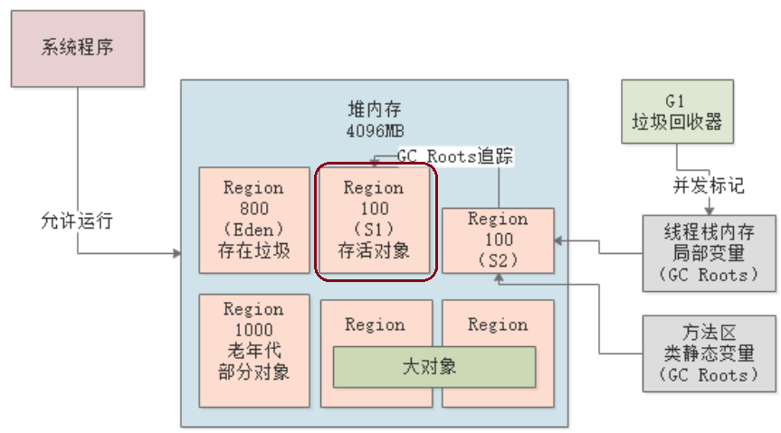
并发标记阶段，不需要“Stop the World”，需要追踪全部存活对象，所以非常耗时。但是，由于GC线程与工作线程并行运行，所以对系统程序的影响不大。
最终标记
在并发标记期间，JVM会记录系统程序对一些对象的修改，比如新创建一些对象，又有一些对象失去引用等等。在最终标记阶段，会进入“Stop the World”状态，然后根据并发标记阶段记录的修改，再次标记下哪些是存活对象，哪些是垃圾对象：
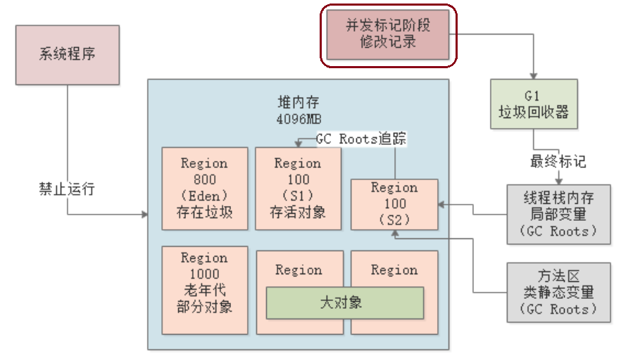
并发标记阶段，需要“Stop the World”，但是并不耗时。
执行回收
执行回收阶段，会计算老年代中的每个Region中的存活对象数量、存活对象占比，以及执行GC的预期性能和效率，然后会“Stop the World”，开始进行垃圾回收，回收时采用复制算法，把要回收的Region里的存活对象放入其他Region，然后清掉这个Region。
执行回收阶段，只会选择部分Region进行回收，因为系统停顿时间必须控制在我们指定的范围内。
比如说，此时老年代的1000个Region已经占满了对象，根据设置的预期停顿时间（200ms），那么通过之前的计算得知，可能回收其中800个Region差不多刚好200ms，那么就只会回收800个Region，把系统停顿之间控制在指定范围内：
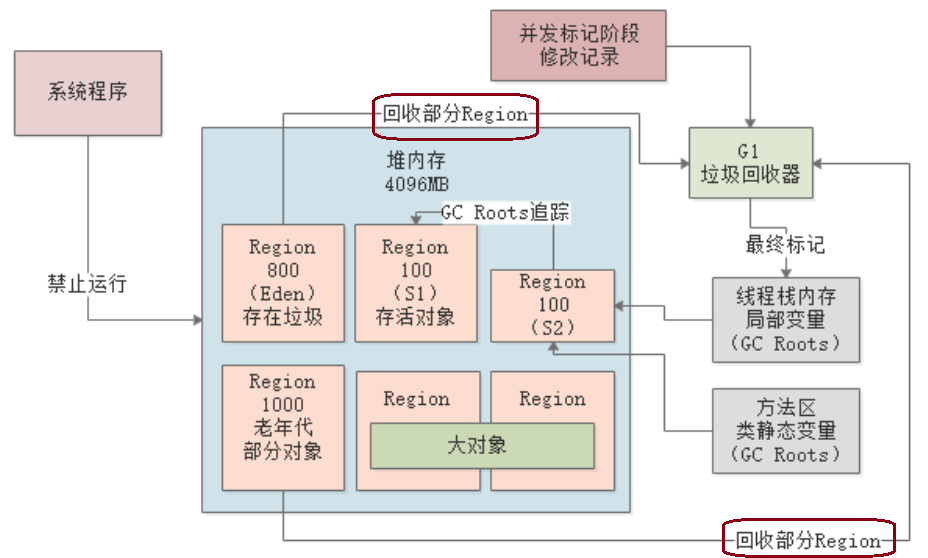
注意：
执行回收时，并不是一次性就全部回收掉了，“执行回收“这个动作会反复执行好多次，也就是说先停止系统一会儿，然后回收掉一些Region，再让系统运行一会儿，然后再停止再回收Region，如此反复。参数-XX:G1MixedGCCountTarget可以控制次数，默认为8次。
之所以这样做，本质还是要控制每次GC的时间再预期停顿时间内。
执行回收时，会“Stop the World”，而且不仅仅只回收老年代，新生代和大对象的Region也都会进行回收。
另外，只有Region中的存活对象大小 < Region空间的85%时，才会对这个Region进行回收，可以通过参数
-XX:G1MixedGCLiveThredholdPercent来设置这个比例。
停止回收
由于在执行回收阶段，基于复制算法，那就会不断的空出一些Region，一旦空闲的Region数据量达到了堆内存的5%，就会立即停止回收，那么本轮混合回收（Mixed GC）就结束了。
可以通过参数
-XX:G1HeapWastePercent配置这个空闲Region的占比，默认为5%。
回收失败
由于在执行回收时，需要将存活对象拷贝到其他Region中，如果万一在次过程中没有空闲的Region可以承载存活对象，就会触发Full GC。
此时，JVM会立即停止程序，然后采用Serial Old收集器进行单线程标记、清除、压缩整理，空出一批Region，这个过程是非常缓慢的。
四、总结
本章，我们对G1垃圾回收的基本原理和垃圾回收的整个流程做了讲解。其实可以发现，G1的最大特点其实就是把每次执行回收的时间控制在我们设置的预期停顿时间范围内。
G1非常适合大内存的机器，比如16G、32G这种，另外对于响应时效性要求高的系统，G1也非常合适，因为G1可以控制每次GC的时间。
此外，G1的整个GC过程其实和CMS非常类似，下一章我们将通过一个实际案例来讲解如何对G1进行优化，及其背后的原理。